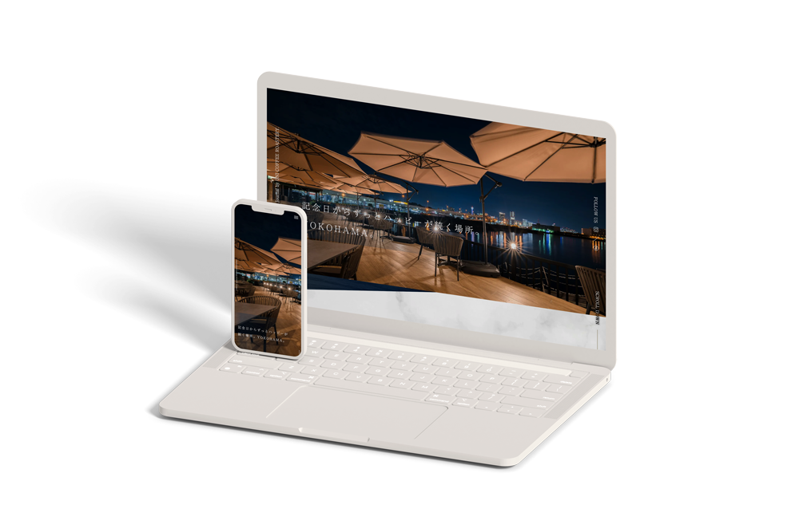

レストランの記念日プラン集客用LP
コーディング
制作時間
- コーディング：80時間
制作の経緯
勤務先企業が運営するレストランの記念日プランの問い合わせ・予約件数アップを狙った集客用LPの制作にあたり、コーディングを担当しました。
使用技術
- Visual Studio Code
- WordPress
アピールポイント
ピクセルパーフェクトを目指したコーディング
高級かつデザイン性の高いデザインのため、デザインのクオリティを少しでも損なわないよう、画面幅に対する余白や文字サイズなどの比率がデザインカンプ通りになるようにコーディングしました。
MVスライダーの実装
MVスライダーの動きについてはデザイナーからの細かな要望に応えるため、Swiperのオプションをカスタマイズすることで実装しました。
パララックスの実装
SP(iOS Safari)ではcssのみで実装することができなかったので、javaScript(jQuery)も用いて実装しました。